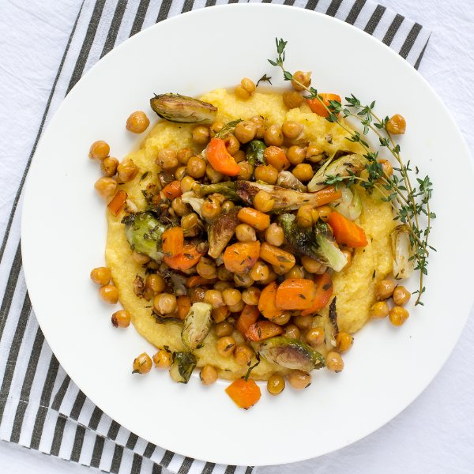

Roasted Chickpeas, Brussels Sprouts & Carrots with Polenta

Prep Time
45 min
Nutrition (per serving)
611.5 kcalCalories
18.7 gProtein
74.7 gCarbs
29.1 gFat
Full nutrition table
| Calories | 611.5 kcal |
| Total fat | 29.1 g |
| Saturated fat | 4 g |
| Trans fat | 0.1 g |
| Cholesterol | 0 mg |
| Sodium | 383.6 mg |
| Carbohydrates | 74.7 g |
| Fiber | 16.2 g |
| Sugars | 7.9 g |
| Protein | 18.7 g |
| Potassium | 989.1 mg |
| Calcium | 169.4 mg |
| Iron | 6.1 mg |
| Vitamin A | 962.2 IU |
| Vitamin C | 112.3 mg |
| Vitamin D | 0 IU |
Cookware
Ingredients
- 1 lbBrussels sprouts
- 4 mediumcarrots
- 16 fl ozchicken or vegetable broth
- 1 small pkgfresh thyme
- 2 (15 oz) cansgarbanzo beans (chickpeas)
- 4 clovesgarlic
- 1 cuppolenta (cornmeal)
- balsamic vinegar
- black pepper
- extra virgin olive oil
- salt
Steps
- Heat the oven to 500°F. Lightly coat a large baking sheet with oil.2 tbsp extra virgin olive oil
- In a small saucepan, bring broth and water to a boil. Reduce heat to low and gradually add polenta in a thin steady stream, while whisking constantly, until the polenta is incorporated into the liquid. Cook, stirring occasionally, until grains are soft and the texture is creamy, 15-25 minutes.16 fl oz (2 cups) chicken or vegetable broth
2 cups water
1 cup polenta (cornmeal) - Wash and dry the fresh produce.1 lb brussels sprouts
4 medium carrots
1 small pkg fresh thyme - Trim and quarter Brussels sprouts. Transfer to the baking sheet.
- Trim and peel carrots; halve lengthwise and cut into ¼-inch-thick pieces on an angle. Transfer to the baking sheet.
- Drain and rinse the chickpeas; place on a clean towel (or paper towels) and pat dry. Transfer to the baking sheet.2 (15 oz) cans garbanzo beans (chickpeas)
- Toss the vegetables and chickpeas and spread out evenly on the sheet. Place in the oven and roast until the vegetables are tender and chickpeas are golden brown, 15 to 20 minutes.
- Slide the thyme leaves off the stems; discard the stems and chop the leaves.
- Peel and mince the garlic.4 cloves garlic
- In a small bowl, combine and whisk together the thyme, garlic, oil, vinegar, salt, and pepper.4 tbsp extra virgin olive oil
2 tbsp balsamic vinegar
1 tsp salt
½ tsp black pepper - Remove the sheet from the oven. Pour the sauce over the vegetables and chickpeas; toss to coat.
- Place the sheet back in the oven and continue to cook until the vegetables are tender, about 5 minutes more.
- Add oil to the polenta and season with salt and pepper; stir to combine.2 tsp extra virgin olive oil
½ tsp salt
¼ tsp black pepper - Divide the polenta between plates and top with the roasted vegetables and chickpeas. Enjoy!